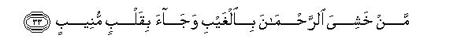
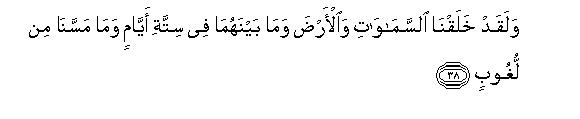

بسم الله الرحمن الرحيم
Sayyid Abul Ala Maududi - Tafhim al-Qur'an - The Meaning of the Qur'an
 50.
Surah Qaf
50.
Surah Qaf
The Surah derives its name from the initial letter Qaf, thereby implying that it is the Surah which opens with the alphabetic letter Qaf.
There is no authentic tradition to show as to when exactly this Surah was sent down. A study of the subject matter, however, reveals that its period of revelation is the second stage of the Holy Prophet's life at Makkah, which lasted from the third year of the Prophethood till the fifth year. We have given the characteristics of this period in the Introduction to the Sarah Al-An'am. In view of those characteristics it can be said that this Surah might have been sent down in about the 5th year, when the antagonism of the disbelievers had become quite intense but had not yet assumed tyrannical proportions.
Authentic traditions show that the Holy Prophet used to recite this Surah generally in the Prayer on the Eid days. A woman named Umm Hisham bin Harithah, who was a neighbor of the Holy Prophet, says that she was able to commit Surah Qaf to memory only because she often heard it from the Holy Prophet in the Friday sermons. According to some other traditions he often recited it in the Fajr Prayer. This makes it abundantly clear that this was an important Surah in the sight of the Holy Prophet. That is why he made sure that its contents reached as many people as possible over and over again.
This reason for this importance can be easily understood by a careful study of the Surah. The theme of the entire Surah is the Hereafter. When the Holy Prophet started preaching his message in Makkah what surprised the people most was the news that people would be resurrected after death, and they would have to render an account of their deeds. They said that that was impossible; human mind could not believe that that would happen. After all, how could it be possible that when the body had disintegrated into dust the scattered particles would be reassembled after hundreds of thousands of years to make up the same body once again and raised up as a living body, Allah in response sent down this discourse. In it, on the one hand, arguments have been given for the possibility and occurrence of the Hereafter in a brief way, in short sentences, and, on the other, the people have been warned, as if to say: "Whether you express wonder and surprise, or you regard it as something remote from reason, or deny it altogether, in any case it cannot change the truth. The absolute, un-alterable truth is that Allah knows the whereabouts of each and every particle of your body that has scattered away in the earth, and knows where and in what state it is. Allah's one signal is enough to make all the scattered particles gather together again and to make you rise up once again as you had been made in the first instance. Likewise, your this idea that you have been created and left free to yourselves in the world and that you have not been made answerable to anyone, is no more than a misunderstanding. The fact is that not only is Allah Himself directly aware of each act and word of yours, even of the ideas that pass in your mind, but His angels also are attached to each one of you, who are preserving the record of whatever you do and utter. When the time comes, you will come out of your graves at one call just as young shoots of vegetable sprout up from the earth on the first shower of the rain. Then this heedlessness which obstructs your vision will be removed and you will see with your own eyes all that you are denying today. At that time you will realize that you had not been created to be irresponsible in this world but accountable to all your deeds the meeting out of the rewards and punishments, the Hell and Heaven, which you regard as impossible and imaginary things, will at that time become visible realities for you in consequence of your enmity and opposition to the Truth you will be cast into the same Hell which you regard as remote from reason today and the ones who fear the Merciful God and return to the path of righteousness, will be admitted to the same Paradise at whose mention you now express wonder and surprise.

In the name of Allah, the Compassionate, the Merciful.
[1-4] Qaf. By the glorious Qur'an!1 -Nay, but they wondered that a Warner from among themselves had come to them.2 So the disbelievers said, "This is indeed a strange thing: when we are dead and have become dust, (shall we be raised up again)? Such a return is far removed from reason.”3 (Whereas) We know very well whatever the earth consumes of their bodies, and We have a Book which preserves every thing.4
[5] Nay, but these people plainly denied the Truth when it came to them. That is why they are confused now.5
[6-8] What!6 Have they never looked up to the sky above them, (and observed) how we made it and adorned it,7 and how there is no flaw in it?8 And We spread out the earth and set mountains in it and caused to grow in it every kind of beautiful vegetable.9 All these things are eye-openers and object lessons for every servant who turns (to the Truth).
[9-11] And from the sky We sent down blessed water where-by We produced gardens and harvest grain and tall palm-trees laden with clusters of fruit, piled one over another. This is the arrangement to provide food for the servants. With this water We revive a dead land.10 Such also will be the resurrection (of the dead from the earth)."11
[12-14] Before them the people of Noah and the people of the Rass12 and Thamud also denied, and so did `Ad and Pharaoh13 and the brethren of Lot and the dwellers of Aiykah and the people of Tubba`.14 15 Every one denied the Messengers,16 and consequently My scourge proved true against them.17
[15] What! Were We powerless in case of the fast creation? Yet these people are in doubt concerning a new creation.18


[16-29] We19 have created man and know every evil suggestion that arises in his heart: We are even closer to him than his neck-vein.20 (And besides this direct knowledge of Ours) two scribes, sitting on his right and on his left, are recording everything. He utters not a word but there ' is an ever ready observer to note it down.21 Then behold, the agony of death has come with the truth.22 This is the same thing that you were trying to escape.23 And then the Trumpet was blown.24 threatened. Every person has come in a state that there is a driver with him and a witness.25 You were heedless of this. We have removed your curtain from you, so your sight is very sharp today.26 His companion submitted, "Here is the one who was given in my charge."27 It was commanded, "Cast into Hell28 every stubborn disbeliever,29 who was hostile to the Truth, who was a forbidden of the good,30 a transgressor,31 a doubter32 and who had set up another god with Allah. Cast him into severe torment."33 His companion submitted, "Our Lord, I did not cause him to rebel, but he himself had gone far astray."34 In reply it was said, "Do not dispute in My Presence: I had already warned you of the evil end.35 My sentence cannot be changed36 nor am I unjust to My servants."37

[30-35] The Day when We shall ask Hell, "Are you full?" it will say, "Is there any more?"38 And Paradise shall be brought close to the righteous, no longer distant.39 It will be said, "This is that which was promised to you, to every such person who turned (to God) again and again,40 who Was watchful,41 who feared the Merciful, unseen.42 Who has come with a devoted heart.43 Enter Paradise in peace."44 That Day will be the Day of eternal life. There they shall have all that they will desire, and We have with us yet more for them.45
[36-37] We have destroyed many nations before them, who were much stronger than they in power, and they ransacked all the lands.46 Then, could they find a place of refuge?47 Indeed, in this there is a lesson for every such person who has a heart, or who gives ear and listens with attention.48

[38-40] We created the heavens and the earth and all that lies between them in six days,49 and no fatigue overcame Us. Therefore, O Prophet, bear with patience whatever they say,50 and keep up glorifying your Lord with His praise, before sunrise and before sunset. And glorify Him again in the night and also when you are free from prostrations.51

[41-44] And listen! The Day when the caller shall call out froth near (every person),52 the Day when all the people shall be hearing the Cry rightly,53 shall be the Day of the coming out of the dead from the earth. It is We Who bestow life and give death and to Us shall all return on that Day, when the earth shall split asunder and the people shall be rushing out of it in all haste. This gathering together is very easy for Us.54
[45] O Prophet, We know very well what they say,55 and you are not there to compel them into believing. Therefore, admonish with this Qur'an every such person who fears My warning.56
1The word "majid" is used for expressing two meanings in Arabic: for expressing the high rank, status, honor and dignity of a person, and for saying that somebody is highly generous, charitable and beneficent. This word has been used for the Qur'an in both these meanings. The Qur'an is great and glorious in the sense that no book of the world can be brought up against it. It is a miracle both in its language and literary excellence and in its teaching and wisdom. Humans were helpless to produce the like of it at the time when it was sent down and are likewise helpless even today. Nothing of it could ever be proved wrong in any age, nor can anything of it be proved wrong in the present age. Falsehood can neither attack it from the front nor from the rear, and defeat it. And it is generous and beneficent in the sense that the more a man goes on trying to gain guidance from it, the more of guidance it goes on giving him, and the more he follows and obeys its commands and instructions the more he continues to be blessed with good, things of the world and the Hereafter. There is no limit to its benefits and advantages where a man may become independent of it, and where it may cease to be beneficial and useful for him.
2This sentence is a unique example of eloquence. In it a vast subject has been compressed into a few brief words. The object for which an oath has been sworn by the Qur'an has not been mentioned. In stood, a subtle gap has been left and the sentence is resumed with "nay". If one thinks a little and also keeps in view the background in which this has been said, one comes to know what-is the subject of the gap that has been left between the oath and "nay". In fact, what has been sworn of is this: "The people of Makkah have not refused to acknowledge the Prophet hood of Muhammad (upon whom be Allah's peace and blessings) for any sound reason but for the highly unsound reason that a member of their own kind and an individual of their own nation has conic to them as a Warner from God and this is something highly surprising for them; whereas what would actually be surprising was if God had remained unconcerned about the well-being and adversity of His servants and made no arrangement whatever to warn them; or had sent a non-human to warn the human beings; or a Chinese to warn the Arabs. Therefore, this basis of the denial is absolutely unsound, and a reasonable person cannot but admit that there must exist some arrangement from God to warn the servants, and in the form that the Warner himself should be a person from among the people to whom he is sent." As for the question whether Muhammad (upon whom be Allah's peace and blessings) is the person whom God has sent on this mission, no other evidence is needed to settle it but this glorious and beneficent Qur'an, which he is presenting; this is by itself enough to provide a proof of it. This explanation shows that in this verse an oath has been sworn by the Qur'an to impress the point that Muhammad (upon whom be Allah's peace and blessings) is really the Messenger of Allah and the disbelievers' surprise and wonder about his apostleship is misplaced, and the fact of the Qur'an's being "majid" is a proof of this claim.
3This was the second cause of their surprise, the first being that a member of their own kind and clan had arisen with the claim that he had come as a warner to them from God. They were further surprised that the person was warning them to the effect that all men will be raised back to life after death and they will be produced all together in the Court of Allah where their deeds will be subjected to accountability and they will be rewarded and punished accordingly.
4That is, "If it cannot be comprehended by intellect, it is their own narrow mind to blame. It does not mean that Allah's knowledge and power also should be narrow. They think that it is in no way possible to collect the scattered particles of the bodies of the countless human beings who have died since the beginning of creation and will die till Resurrection. But the fact is that Allah directly knows each of those particles in whatever form and in whichever place they are. Furthermore, a full record of this is being maintained in the Register of Allah, which has not left out any particle un-recorded. Then, as soon as Allah commands, His angels will forthwith take out every particle from wherever it is with the help of this record, and will make up the same bodies once again in which human beings had lived and worked in the world."
This verse also is one of those verses which point out that the lift hereafter will not only be a physical lift as it is in this world, but the body of every person also will be the same which he had in this world. If it were not so, it would be meaningless to tell the disbelievers: "We know very well whatever the earth consumes of their bodies and We have a Book which preserves everything. " (For further explanation, sec E.N. 25 of Surah Ha Mim As-Sajdah) "
5In this brief sentence also a vast subject has been compressed. It means: These people did not rest content only with expressing wonder and declaring the thing to be far removed from reason, but when the Holy Prophet Muhammad (upon whom be Allah's peace and blessings) presented his message of the Truth they denied it as falsehood without any hesitation. Its inevitable result was, and the same only could follow from it, that they arc not agreed on any one position with regard to the invitation and the Messenger who has presented it. Sometimes they brand him a poet, sometimes g sorcerer, and sometimes a madman. Sometimes they say that he is a magician and sometimes that he is bewitched. Sometimes they say that he has fabricated this thing by himself in order to establish-. his superiority, and sometimes they bring the charge that there peace and blessings) himself was standing in Makkah and reciting the Qur'an to the people, who had known and seen him grow up from childhood to youth and mature manhood before their eyes, the full meaning of these allusions was by itself clear and evident to every person. Therefore, leaving it aside, detailed reasoning is now being presented about the authenticity of the second thing which those people regarded as strange and far removed from reason and intellect.
6_____
7Here, by the sky is implied the whole firmament that man finds spread over him, day and night, in which the sun shines in the day and the moon and countless stars glitter at night, which amazes him even when he sees it with the bare eye, but which appears as a vast, limitless Universe when he looks at it through the telescope. It seems to be starting from nowhere and ending nowhere. Millions of times larger planets than our earth are moving in it like tiny balls; thousands of times brighter stars than ow sun are shining in it our this entire solar system is located in a comer of its only one galaxy; only in this one galaxy there exist at (east three thousand million other stars like our own sun, and man's observation has so far discovered one million such galaxies. Out of the lacs of galaxies our nearest, neighboring galaxy is 'so distant from us that its light reaches the earth in ten lac years traveling at the speed of 186,000 miles per second. This shows the vastness of that part of the Universe which has so far been observed and explored by man. As to how vast is the entire Universe of God we have no means to estimate and judge. Maybe that the known Universe of man does not bear with the entire Universe even that ratio which a drop of water beats with the ocean. If about the God Who has brought this huge and wonderful Universe into being, this tiny talking animal, called man, who creeps the earth, asserts that He cannot recreate him once again after death, it would be due to narrowness of his own mind. The power of the Creator of the Universe would not at all be affected by it !
8That is, "In spite of its amazing vastness the wonderful order of the Universe is so coherent and firm and its composition so perfect that there is no crack or cleft in it, and its continuity breaks nowhere. This can be understood by an example. Radio astronomers of the present age have observed a galactic system which they have named Source 3c 295. They think that its rays which are now reaching us might have left it more than four thousand million years ago. The question is: How could it be possible for the rays to reach the earth from such a distant source had the continuity and coherence of the Universe between the earth and the galaxy been broken somewhere and its composition been split at some point. Allah, in fact, alludes to this reality and puts this question before man "When you cannot point out even a small breach in this system of My Universe, how did the concept of any weakness in My power enter your mind, that after the respite of your test is over, if I like to bring you back to life to subject you to accountability before Me, I would not be able to do so?"
This is not only a proof of the possibility of the Hereafter but also a proof .of Tauhid. These rays' reaching the earth from a distance of four thousand million light years and being detected by the man-made instruments expressly points to the fact that from the galaxy to the earth the entire world has been made up of one and the same substance continuously, one and the same kind of the forces are working in it, and they are functioning according to the same laws without any difference and disparity. Were it not so the rays could neither have reached here, nor detected by the instruments which Man had made after understanding the laws working on the earth and its surroundings. This proves that One God alone is the Creator of this whole Universe and its Master and Ruler and Controller .
9For explanation, sec E.N.'s 12, 13, 14 of An-Nahl, E.N.'s 73, 74 of An-Naml, and E.N. 7 of Az-Zukhruf.
10For explanation, set E.N.'s 73, 74, 81 of An-Naml, E.N.'s 25, 33, 35 of Ar-Rum and E. N . 29 of Ya Sin.
11The reasoning is this: `Your conjecture about God Who made this sphere of the earth a suitable home for living creatures and Who by combining the lifeless clay of the earth with the lifeless water from the sky produced such a fine vegetable life that you witness flourishing in the form of your gardens and crops, and W ho made the vegetation a means of sustenance for both man and beast, that He has no power to resurrect you after death, is a foolish and absurd conjecture. You witness almost daily the phenomenon that a land is lying barren and lifeless; then as soon as it receives a shower of rain, it gives birth to an endless train of life all of a sudden, the roots lying dead for ages sprout up and a variety of insects emerge playfully from the layers of the earth. This is a manifest proof that life after death is not impossible. When you cannot deny this express observation of yours, how can you deny that when Allah wills, you too will sprout up from the earth as the vegetation sprouts up. In this connection, one may note that in many parts of Arabia it does not sometimes rain for as long as five years at a stretch and sometimes even for longer periods the land does not receive even a drop of rain. For such long intervals in the burning deserts it is not conceivable that the roots of grass and the insects of the earth would survive. In spite of this when a little of the rain falls at some place, grass sprouts up and the insects of the earth return to life. Therefore, the inhabitants of Arabia can understand this reasoning much better than those people who do not have to experience such long periods of drought.
12Before this the people of Rass (Ashab ar-Rass) have been mentioned in Surah AI-Furqan: 38 above, and now here, but at both places they have been only referred to as of those nations who rejected the Prophets. No other detail about them has been given. In the traditions of Arabia two places are well known by the name of ar-Rass, one in the Najd and the other in northern Hejaz. Of these ar-Rass of the Najd is better known and has been referred to more often in the pre-Islamic poetry of Arabia. Now it is difficult to determine which of these was the home of the Ashab ar-Rass. No reliable detail of their story is found in any tradition either. The most that one can say with certainty is that it was a nation which had thrown its Prophet into a well. But from the mere allusion that has been made to them in the Qur'an one is led to think that in the time of the revelation of the Qur'an the Arabs were generally aware of this nation and its history, but the traditions about them could not be preserved in historic records.
13Only the Pharaoh has been mentioned instead of the people of Pharaoh, for he had so dominated his people that they had been left with no independent opinion and will of their own, apart from him. They followed him willy-nilly wherever he led them. That is why he alone was held responsible for the deviation and degeneration of his people. Wherever there exists the freedom of will and action for a nation, it by itself bears the burden of its deeds, and wherever one man's dictatorship may have rendered a nation powerless the one man alone takes on his head the burden of the sins of entire nation. This doesn't mean that the nation becomes absolved from its duty and responsibility when the one man alone has burdened himself with the responsibility. This is not so. The nation in such a case becomes responsible for the moral weakness shown by it in that why it allowed a man to overpower and dominate it so completely. The same thing has been alluded to in Az-Zukhruf: 54, thus: "Pharaoh took his people to be light, and they obeyed him, for they were indeed a sinful people. " (For explanation, see E.N. 50 of Surah Az-Zukhruf).
14For explanation, see E.N. 37 of Surah Saba; E.N, 32 of Surah Dukhan.
15That is, they all denied the apostleship of their Messengers as well as the news given by them that they will be raised back to life after death.
16Although every nation denied only the Messenger who was sent to it, as it denied the news which all the Messengers have been presenting unanimously, denying one Messenger, therefore, amounted to denying all of them. Moreover, these nations did not merely deny the apostleship of the Messenger who had come to them, but they were not at all inclined to believe that a mere human could be appointed by Allah for the guidance of other men. Therefore, they denied apostleship itself, and .the crime of no one was confined to belying and rejecting any one Messenger only.
17This is a reasoning from history for the Hereafter. In the preceding six verses, arguments were given for the possibility of the Hereafter; in these the historical end of the nations of Arabia and the adjoining lands has been presented as an argument to prove that the doctrine of the Hereafter which all the Prophets have been presenting, is the very truth, for whichever nation denied it became involved in the moral degeneration of the worst kind with the result that the torment of God descended on it and eliminated it from the world. This necessary result of the denial of the Hereafter and moral perversion which one can witness throughout history, is an express proof of the fact that man has not been created to be irresponsible in this world, but he has necessarily to render an account of his deeds as soon as the time limit for action at his disposal comes to an end. That is why whenever he works in the world irresponsibly, his whole lift pattern is set on the path of ruin. If evil and wrong results go on following a course of action successively, it is a clear proof that that course of action is in conflict with the truth.
18This is a rational argument for the Hereafter. The person who is not a denier of God and is also not so foolish as to regard this excellently ordered Universe and the creation of man in it as a mere accident, cannot help but admit that God alone has created man and this whole Universe. Now this actual fact that we exist alive in this world and this great work-house of the earth and heavens is functioning before us, by itself is an obvious proof that God was in no way powerless in creating us and this Universe. Yet if a man says that after bringing about Resurrection the same God will not be able to bring about a new world order and will not be able to create us once again, he says an irrational thing. Had God been powerless He would not have been able to create all this in the first instance. When He has created the Universe in the first instance and we ourselves came into existence by virtue of that act of creation, what can then be the rational ground for assuming that He will become powerless to re-make the dismantled thing originally made by Himself?
19After presenting the arguments for the Hereafter, it is being stated: `Whether you believe in the Hereafter, or deny it, it has to come in any case, and it is such a factual reality, which will certainly come about in spite of your denial. If you heed the warning given by the Prophets in advance and prepare for it, you will be doing good to yourselves; if you do not believe in it, you will be inviting your own doom. Your denial will not prevent the Hereafter from taking place and God' s Law of justice will not became suspended."
20That is, "Our power and Our knowledge has so encompassed man from within and without that Our power and knowledge is closer to him than his own neck-vein. We do not have to travel from a distance to hear what he says, but We directly know every thought that arises in his heart. Likewise, when We shall want to seize him, We will not have to seize him after covering a distance, for wherever he is, he is in Our grasp; and whenever We will, We will seize him."
21That is, "On the one hand, We Our self directly know man's actions and movements, even his hidden thoughts; on the other, every man has two angels appointed over him, who are recording whatever he does and says; none of his actions or words is left unrecorded. " This means that when man is produced in the Court of Allah, Allah at that time Himself also will be knowing what each person has done in the world; besides, there will also be two witnesses who will produce documentary evidence of the person's actions and deeds. As to what will be the nature of this documentary evidence, it is difficult for us to have a precise conception of it. But from the facts that we are witnessing today, it seems certain that the voices and pictures and marks of man's actions and movements are being preserved and imprinted on every particle of the environment in which he lives and works, and each one of these can be reproduced in exactly the same form and voice so as to Leave no difference whatever between the original and its copy. Man is doing this on a very limited scale with the help of his inventions, but the angels of God neither stand in need of these machines nor are bound by any limitation. Man's own body and everything around it is their tape and their film upon which they can record every voice and every image along with its minutest and most delicate detail precisely and exactly, and can make man hear, on the Day of Resurrection, with his own ears, in his own voice, those very things which he talked in the world, and can make him see, with his own eyes, the pictures of all his misdeeds, whose genuineness he would not possibly be able to deny.
Here, one should also understand that in the Court of the Hereafter Allah will not punish anybody only on the basis of His own knowledge, but will punish him after fulfilling all the requirements of justice. That is why an exhaustive record is being got prepared of every person's words and deeds in the world so that a complete proof with undeniable evidence becomes available of everyone's life-work and activity.
22"To come with the truth" implies that the agony of death is the starting point when the reality which had remained concealed in the world, begins to be uncovered. At this point man starts seeing clearly the other world of which the Prophet had forewarned him. Here, man also comes to know that the Hereafter is the very truth, and also this whether he is entering this second stage of life as favored or damned.
23That is, "This is the same reality which you refused to believe. You desired that you should live and go about as an unbridled rogue in the world, and there should be no other life after death, in which you may have to suffer for the consequences of your deeds, That is why you shunned the concept of the Hereafter and were not at all inclined to believe that this next world would ever be established. Now, you may see that the same next world is unveiling itself before you.".
24This implies that blowing of the Trumpet at which all dead men will rise back to life in their own physical bodies. For explanation, see E.N. 47 of Al An'am, E.N. 57 of Ibrahim, E.N. 78 of Ta. Ha, E.N.1 of AI-Hajj, E.N.'s 46,47 of Ya Sin, and E.N. 79 of Az-Zumar.
25Most probably this implies the same two angels who had been appointed for compiling the record of the words and deeds of the person in the world. On the Day of Resurrection, when every man will rise from his grave on the sounding of the Trumpet, the two angels will come forth immediately and take him into their custody. One of them will drive him to the Divine Court and the other will be carrying his record.
26That is, "You can clearly see that everything of which the Prophets foretold is present here. "
27Some commentators say that "the companion" implies the angel who has been referred to as "a witness" in verse 21. He will say: "I have this person's record ready with me here" . Some other commentators say that "the companion" implies the satan who was attached to the person in the world. He will say: "This person whom I was controlling and preparing for Hell, is now presented before You. " But the commentary that is more relevant to the context is the one that has been reported from Qatadah and Ibn Zaid. They say that the companion implies the angel who drove and brought the person to Allah's Court He will say, ¦Here is the person who had been given in my charge"
28As the context shows this command will be given to the two angels who had taken the culprit into their custody as soon as he had risen from the grave, and then brought him before the Court. "
29The word kaffar" as used in the Text means an ungrateful person as well as a denier of the truth.
30"Khair" in Arabic is used both for wealth and for goodness. According to the first meaning, the sentence means that he paid no one his dues from his wealth, neither the dues of Allah nor of the people. According. to the second meaning, it would mean that he did not only withhold himself from the path of goodness but forbade others also to follow it. He had become a hindrance for the people in the way of goodness and exerted his utmost to sec that goodness did not spread.
31That is, "He transgressed the bounds of morality in every-thing he did. He was ever ready to do anything and everything for the sake of his interests, his desires and his lusts. He amassed wealth by unlawful means and spent it in unlawful ways. He usurped the people's rights, had neither control over his tongue nor over his hands, and committed every injustice and excess. He did not rest content with creating hindrances in the way of goodness but harassed those who adopted goodness and persecuted those who worked for it."
32The word murib" as used in the original has two meanings: a doubter and the one who puts others in doubt, and both arc implied here. It means that he was not only himself involved in doubt but also created doubts in the hearts of others. He held as doubtful the Being of Allah and the Hereafter and the angels and the Prophet hood and Revelation and every other truth of religion. Anything that was presented by the Prophets as a truth was held as unbelievable by him, and the same disease he spread to other people. Whomever he came in contact with, he would create one or the other doubt, one or the other evil thought in his mind.
33Allah, in these verses, has enumerated the qualities that make a man worthy of Hell:
(1) Denial of the Truth,
(2) ingratitude to Allah,
(3) enmity for the Truth and the followers of the Truth,
(4) to become a hindrance in the way of goodness,
(5) failure to fulfill the rights of Allah and the people from one's wealth,
(6) to transgress the bounds in one's affairs,
(7) to commit injustices and excesses against others,
(8) to doubt the truths of religion,
(9) to create doubts in the hearts of the people, and
(10) to hold another as an associate in the Godhead of Allah.
34Here by “companion” is meant the satan who was attached to the disobedient person in the world. And this also becomes evident from the style that both the person and his satan are disputing between themselves in the Court of Allah. He says: "My Lord, this wretched one pursued me in the world and did not leave me until he succeeded in misleading me; therefore he alone should be punished. And the satan replies "Lord, I had no power over him. Had he not himself willed to become rebellious, I could not have seduced him forcibly. This wretched person himself fled from goodness and was fascinated by evil. That is why he did not like anything that the Prophets presented and went on yielding to every temptation and inducement presented by me."
35That is, "I had warned both of you as to what punishment will be given to the one who beguiles and what punishment will be suffered by him who is beguiled. In spite of this warning when you did not desist from committing your
Respective crimes, there is no use quarreling now. Both the one who beguiled and the one who was beguiled have to be punished for the crimes committed by them. "
36That is, "It is not My way to change the decisions once taken. The decision that I have taken to east you into Hell cannot be withdrawn, nor can the law that I had announced in the world be changed that the punishment for misleading and for being misled will be awarded in the Hereafter."
37The word zallam as used in the original means the one who is highly unjust. It does not mean: "I am unjust to My servants but not highly unjust. " But it means: "If I were unjust to My own servants being their Creator and Sustainer, I would be highly unjust. Therefore, I am not at all unjust to My servants. This punishment that I am giving you is precisely the same punishment which you have made yourselves worthy of. You arc not being punished an iota more than what you actually deserve, for My Court is a Court of impartial justice. Here, no one can receive a punishment which he does not actually deserve, and for which his being worthy has not been proved by certain and undeniable evidence.
38This can have two meanings:
(1) "There is no room in me for more men; " and
(2) "bring all other culprits who may be there. "
According to the first meaning the scene depicted would be that Hell has been so stuffed up with culprits that it cannot hold any more; so much so that when it was asked: "Are you full ?" it cried out, alarmed: "Are there still more culprits to come ?" According to the second meaning, the scene depicted before the mind is that the wrath of Hell is so flared up against the culprits that it is constantly demanding more and more of them to be cast into it so that no culprit escapes un-punished.
"Here, the question arises: What is the nature of Allah Almighty's addressing Hell and its reply? Is it only something metaphoric, or is Hell actually a living and intelligent being which may be spoken to and it may respond and give replies? In this regard nothing can, in fact, be said with certainty. Maybe the meaning is metaphoric and only for the purpose of depicting the actual scene of the state of Hell it may have been described in the form of the question and answer, just as one may ask a motor-car: "Why don't you move forward?" and it may say: "There is no petrol in me." But this also is quite possible that this conversation is based on reality. Therefore, it is not correct to assume about the
Respective crimes, there is no use quarreling now. Both the one who beguiled and the one who was beguiled have to be punished for the crimes committed by them. "
39That is, "It is not My way to change the decisions once taken. The decision that I have taken to east you into Hell cannot be withdrawn, nor can the law that I had announced in the world be changed that the punishment for misleading and for being misled will be awarded in the Hereafter."
40The word awwab is very extensive in meaning. It implies the person who might have adopted the way of obedience and Allah's goodwill instead of the way of disobedience and the flesh, who gives up everything that is disapproved by Allah and adopts everything that is approved by him, who gets alarmed as soon as he swerves a little from the path of worship and obedience and repents and returns to the path of worship and obedience, who remembers Allah much and turns to Him in all matters of life.
41The word hafiz means the "one who guards. " This implies the person who takes care of the bounds and duties enjoined by Allah, who guards the trusts imposed by Allah and avoids the things forbidden by him, who keeps watch over his time, energies and activities to see that none of these is being misemployed or misused, who offers repentance, remains steadfast and keeps it. strong and intact, who examines himself over and over again to see that he is not disobeying his Lord anywhere in word or deed.
42That is, Although he could not see the Merciful God and could not perceive Him by his senses in any way, yet he feared His disobedience. His heart was more dominated by the fear of the unseen Merciful God than the fear of other perceptible powers and visible and mighty beings, and in spite of knowing that He is All-Merciful, he did not become a sinner, trusting His Mercy, but feared His displeasure in whatever he said and did. Thus, this verse points to two of the believer's important and basic characteristics: first, that he fears God although he cannot see and perceive Him; second, that he does not persist in sin in spite of his full awareness of God's quality of mercy. These very two characteristics make him worthy of honor in the sight of Allah. Besides, there is another subtle point also in it, which Imam Razi has pointed out. In Arabic, there are two words for fear, khauf and khashiyyat, which have a difference in their shade of meaning. The word khauf is generally used for the fear that a man feels in his heart on account of his sense of weakness as against someone's superior power and strength, and the word khashiyyat is used for the dread and awe with which a man is filled and inspired because of somebody's glory and grandeur and greatness. Here, the word khashiyyat has been used instead of khauf, which is meant to point out that a believer does not fear Allah only on account of the fear of His punishment, but it is the sense of Allah's glory and greatness that keeps him awe inspired at all times.
43The word munib in the original is derived from inabat, which means to turn to one direction and to turn to the same again and again, just like the needle of the compass that points to the magnetic north persistently, however one may try to turn it away from that direction. Therefore, qalb-i-munib would mean such a heart as has turned away from every other direction and turned towards One Allah alone and then kept on turning towards Him again and again throughout life. The. same sense has been conveyed by the "devoted heart." This shows that in the sight of Allah the man of real worth is he who remains attached and devoted to Allah alone not merely verbally but also truly and sincerely.
44If the word salam in udkhulu-ha bi-salam-in is taken in the meaning of peace and security, it would mean: "Enter this Paradise safe and secure from every kind of grief, sorrow, anxiety and affiliation"; and if it is taken in the meaning of salam itself, it would mean: "Enter this Paradise you are welcomed here with the greeting of peace by Allah and his angels."
In these verses Allah has mentioned the qualities because of which a person makes himself worthy of Paradise, and they are:
(1) Taqwa (piety),
(2) Turning towards Allah,
(3) watching over and guarding one's relationship with Allah,
(4) fearing Allah although one has not seen Him, and has full faith in His quality of mercy, and
(5) coming into His Presence with a devoted and captivated heart, i.e. remaining constant on the way of devotion and dedication till death.
45That is, "They will certainly get whatever they desire, but in addition We will also give them that which they have never conceived and, therefore, could not desire."
46That is, "They were not only powerful and strong in their own land but had also made incursions into other lands and brought under their sway far off lands as well. "
47That is, "Could their power and might save them when the time appointed by Allah came for their seizure? And could they find shelter and refuge anywhere? Now, on what trust do you hope that you will get refuge somewhere in the world when you have rebelled against Allah ?"
48In other words, either one should have so much of native intelligence that one may think right of one's own accord, or if not so, one should be so free from prejudice and neglect that one may listen with attention when another person tries to make one understand the truth.
49For explanation, see E.N.'s 11 to 15 of the commentary of Surah Ha Mim As-Sajdah.
50That is, "The fact of the matter is that We have made this entire Universe in six days and We did not become weary at the end so that We might be powerless to reconstruct it Now, if these ignorant people mock you when they hear the news of the life-after-death from you and call you a madman, have patience at it, listen to whatever nonsense they utter with a cool mind, and continue to preach the truth that you have been appointed to spread. "
In this verse, there is a subtle taunt on the Jews and the Christians as well, in whose Bible the story has been fabricated chat God made the earth and the heavens in six days and rested on the seventh day (Gen., 2: 2). Although the Christian priests are now feeling shy of it and have changed "rested" into “farigh hua” (ceased from working) in their Urdu translation of the Holy Bible, yet in King James Authorized Version of the Bible, the words"...and he rested on the seventh day" are still there, and the same words are also found in the translation that the Jews have published from Philadelphia in 1954. In the Arabic translation also the words are: fastraha ft! yaum as-sebi'.
51This is the means by which man gets the power and energy to continue his struggle to raise the Word of the Truth and to call the people towards righteousness throughout life with full determination even though he may have to pass through heart-breaking and soul-destroying conditions and his efforts may seem to be bearing no fruit. Praising and glorifying the Lord implies the Prayer here, and wherever in the Qur'an the praise and glorification has been associated with specific times, it implies the Prayer. The Prayer "before sunrise" is the Fajr Prayer, and the Prayers "before sunset" are the 'Asr and the Zuhr Prayers. The Prayers in the night are the Maghrib and the `Isha` Prayers, and the third, the Tahajjud Prayer, is also included in the glorification of the night. (For explanation, see E.N. 111 of Ta Ha; E.N.'s 23, 24 of Ar-Rum). As for the glorification that has been commanded after "being free from prostrations", it may imply the after-Prayer devotions as well as the offering of the voluntary prayers at the end of the prescribed obligatory Prayers. Hadrat Umar, Hadrat 'Ali, Hadrat Hasan bin 'Ali, hadrat Abu Hurairah, Ibn `Abbas, Sha`bi, Mujahid, 'Ikrimah, Hasan Basri, Qatadah, Ibrahim Nakha`i and Auza'i say that it implies the two rak ats after the Maghrib Prayer. Hadrat `Abdullah bin `Amr bin 'As, and according to a tradition, Hadrat `Abdullah bin 'Abbas also, held the opinion that it implies the after-Prayer devotions, and Ibn Zaid says -that the object of this Command is that voluntary Prayers also should be offered after the prescribed obligatory Prayers.
According to a tradition reported in Bukhari and Muslim, on the authority of Hadrat Abu Hurairah, once the poor emigrants from Makkah came before the Ho]y Prophet, and said "O Messenger of Allah, the rich people have attained high ranks for themselves The Holy Prophet asked: What has happened ? They said: They offer the Prayers as we offer, and they observe the Fasts as we observe; but they practice charity, which we cannot, and they set the slaves free which we cannot. The Holy Prophet said: Should I tell you a thing which if you practiced, you would surpass all others, except those who practiced the same that you practiced? It is this that you should pronounce Subhan-Allah, al-Hamdu-lillah and Allah-u-Akbar, 33 times each after every Prayer. " After some time, the same people came and said: `Our rich brothers also have heard this and they too have started practicing, it." Thereupon the Holy Prophet said: "This is Allah's bounty and He bestows it on whomever He wills." According to a tradition these devotional words have to be repeated ten times each instead of 33 times each.
Hadrat Zaid bin Thabit has reported that the Holy Prophet instructed his Companions that they should pronounce Subhan-Allah and al Hamdu-lillah 33 times each and Allah-u-Akbar 34 times after every Prayer. Afterwards an Ansar Companion submitted: "I have seen in a vision that somebody was telling me that it would be better if I pronounced these three devotional words 25 times each and then La ilaha ill-Allah 25 times. The Holy Prophet replied: Well, you may do likewise." (Ahmad, Nasa'i, Darimi).
Hadrat Abu Said Khudri says: ¦I have heard the Holy Prophet pronounce the following words when he would return after the Praye rs were over: Subhana Rabbika Rabbil- `izzat-i `anima yasifun ' wa salam-un 'alal-mursalin, wal-hamdu lillah-i Rabb-il alamin. " (Jassas Ahkam al-Qur 'an).
Besides these, several other forms of the after-Prayer devotional pronouncements also have been reported from the Holy Prophet. Those who wish to act on this instruction of the Qur'an may select the one they find suitable from Mishkat.' Bab adh-dhikr 6a `d as-Salat, commit it to memory and practice it. Nothing can be better than what the Holy Prophet himself has taught in this regard. But what one should bear in mind is that the real object of the devotional pronouncements is not to utter these words only as a matter of course but to refresh and fix their meaning in the mind. Therefore, the meaning of whatever devotions one pronounces should be understood well and then practiced with full consciousness of the meaning.
52That is, "Wherever a dead person would be lying, or wherever his death had occurred is the world, the cry of the caller shall reach him there, which will urge him to rise and go before his Lord to render his account. This cry will be such that everybody who rises from death anywhere on the surface of the earth, will feel as though the caller had called him from a nearby place. Simultaneously will this cry be heard everywhere on the globe equally clearly. From this also one can judge how different will be the concepts of space and time in the neat world from what they arc in this world, and what forces will be working there in accordance with the new laws. "
53The words yasm'aun-as-saihata bil haqq-i can have two meanings:
(1) That all the people will be hearing the cry of the right Command; and
(2) that they will be hearing the cry rightly.
In the first case the sentence will mean that the people will be hearing the same right Command with their cars, which they were not inclined to accept in the world, which they had persistently refused to believe, and mocked the Prophets who had brought it. In the second case it will mean that they will certainly hear this cry, and they will realize that it is no fancy but indeed the Cry of Resurrection; they will be left with no doubt that the Day of Resurrection of which they had been forewarned had arrived and the Cry that was being raised was of the same.
54This is the answer to the saying of the disbelievers that has been reproduced in verse 3 above. They said: "How can it be that when we arc dead and become dust, we shall be raised back to life once again 7 This resurrection is far removed from reason. " In reply it has been said: "This gathering together, i. e. , raising back to life and gathering all the people of the former and latter times together, is very easy for Us. It is not at all difficult for Us to know as to where the dust of one particular person lies and where of the other. We shall also face no difficulty in knowing as to which arc the particles of Harry and which of Dick among the scattered particles of the dust. Gathering together all these particles separately and re-making each and every man's body once again and then creating in that body, the same very personality which had lived in it before, is not a task that may require any hard labor from Us, but all this can be accomplished immediately at one signal from Us. All those human beings who have been born in the world since the time of Adam till Resurrection can be brought together by one Command of Ours. If your petty mind thinks it is far off, it may think so, but it is not beyond the power of the Creator of the Universe."
55In this sentence there is consolation for the Holy Prophet as well as a threat for the disbelievers. Addressing the Holy Prophet it has been said: "Do not care at all about what these foolish people utter about you: We are hearing everything and it is for Us to deal with it. " The disbelievers are being warned to the effect: "The taunting remarks that you are passing against Our Prophet, will cost you dearly. We Our self are hearing everything that you utter and you will have to suffer for its consequences."
56This does not mean that the Holy Prophet wanted to compel the people into believing and Allah stopped him from this, but, in fact, although the Holy Prophet has Been addressed the disbelievers are being warned, as if to say, 'Our Prophet has not been sent as a dictator over you. He is not there to compel you to become believers even if you did not wish to believe. His only responsibility is that he should recite the Qur'an and make the truth plain to the one who would take the warning. Now, if you do not accept his invitation, We Our self will deal with you, not he."